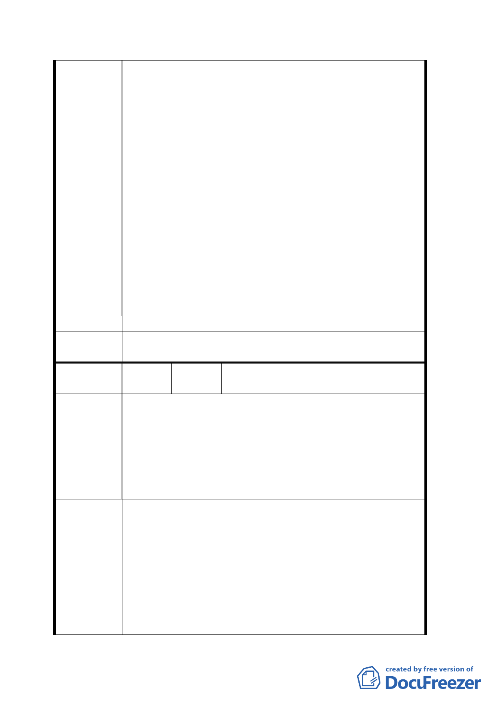

原因為現住戶人數眾多且不單純，國有土地估價過
高並未估算現住戶搬遷費用龐大，有意願建商投資
者大有人在，但接觸現場後都嫌土地款及搬遷費過
高而打退堂鼓，陳情人僅有一位資金雄厚真心投資
者，已經支付一成訂金，現住戶領到者一百多戶，
由情人就近主持，租西寧南路之店面繼續辦理全部
發放訂金，此時突然遭行政院郝院長下令全國土地
還包括台糖土地在內凍結，土地停止標售，訂金跟
著停止發放後又標售之時適逢世界經濟之影響房地
產大不如前。
四、陳情人與建商辦有協議，現住戶由陳情人處理
文件來往，由陳情人出面，因此七月三十日開會旁
聽後向建商匯報談及土地款、搬遷及建築等費用高
達八十億元左右，如果銷售不理想，誰敢要等意見。
五、事關國家建設，都市發展美觀、繁榮進步、舒
解市內交通，關懷照顧當地民眾權益福祉急不容
緩，切盼接納。
建 議 辦 法 同陳情理由。
委員會決
議
同決議一、二。
編
號
16
陳情人
侯敏雄、侯李昭儀、侯佳宏、陳清
吉
建議位置：臨中華路、貴陽街至西寧南路
一、 貴陽街二段 16 戶房屋既非歷史建築也非古
蹟，只是普通建物不要列入古蹟及歷史建物。
陳 情 理 由 二、 保障合法建物戶之權益，居住、生計問題，
不宜全部列入廣場用地。
三、 都市商四用地改為廣場，是開倒車之做法。
不顧市民之權益。
一、 將全區土地整體規劃並聯結對面國軍福利中
心土地公開標售地上權五十年，開國際標。
二、 政府有錢收入又免支出任何費用。
三、 投資者負責協調住戶生計問題。
建 議 辦 法 四、 市政府負責法令放寬新地標之建設方案，廣
場公園化以符合國際新都市之建設。
五、 將土地做最有效之使用，做最具宏觀最高度
之開發。
六、 全案維持商四使用，做最新最棒之新都市建
二○